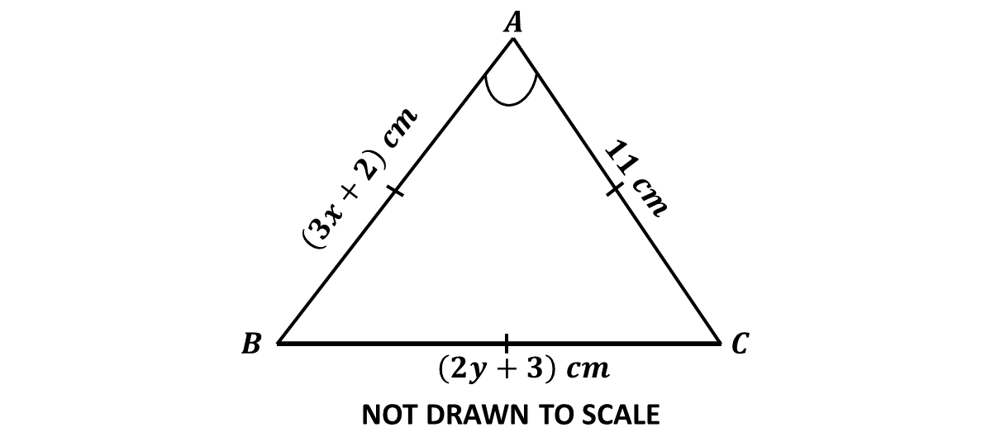
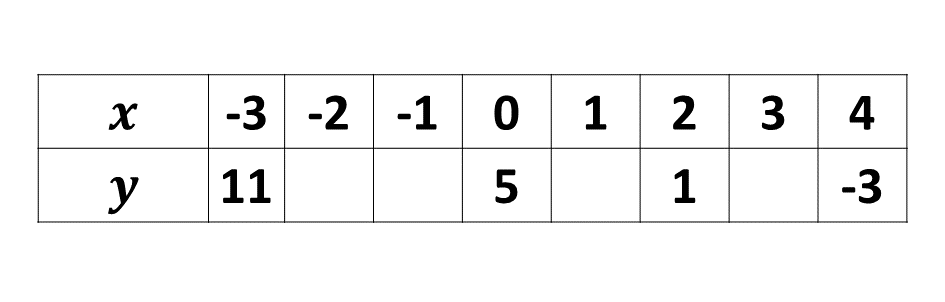

GUIDE (BECE - 2022)
You have 60 minutes for each section. Try to work on your speed as you prepare towards the final exam.
Good luck and remember to check your answers with the solutions provided. If you have any questions, feel free to ask your teacher or refer to the video lessons for more help.
Section A - Multiple Choice Questions
This section contains 40 multiple choice questions. You have 60 minutes to complete it.
Each question has four options labeled A to D. Select the correct answer for each question.
Section B
Question 1
-
Given that \(P =\) {factors of 36} and \(Q =\) {factors of 54},
\((i)\) List the members in the sets \(P\) and \(Q\).
\((ii)\) Find:
\(\hspace{0.5cm}\) A. \(P \cap Q\)
\(\hspace{0.5cm}\) B. \(n(P \cap Q)\)
\(\hspace{0.5cm}\) Γ. The Highest Common Factor (HCF) of 36 and 54.
-
Write down the next two terms of the sequence 1, 4, 9, ..., ...
-
The median of the ordered set of observations 2, 3, (4\(m\)-3),(3\(m\)+1), 11 and 13 in ascending order is 6. Find the value of m.
Solution
Question 1 \((i)\)
\(P =\) {factors of 36}
\(\Rightarrow P =\) {1, 2, 3, 4, 6, 9, 12, 18, 36}
\(Q =\) {factors of 54}
\(\Rightarrow Q =\) {1, 2, 3, 6, 9, 18, 27, 54}
Question 1 \((ii)\)
\(\hspace{0.5cm}\) A. \(P \cap Q =\) {1, 2, 3, 6, 9, 18}
\(\hspace{0.5cm}\) B. \(n(P \cap Q) = 6\)
\(\hspace{0.5cm}\) Γ. The Highest Common Factor (HCF) of 36 and 54:
\(\hspace{0.8cm}\) Common factors of 36 and 54 \(\Rightarrow\) {1, 2, 3, 6, 9, 18}
\(\hspace{0.8cm}\) Highest common factor \(\Rightarrow 18\)
\(\hspace{0.8cm} \therefore\) the highest common factor of 36 and 54 is 18.
Solution
Solution
Question 2
-
Simplify: \((\frac{1}{3} + \frac{1}{12}) \div (\frac{2}{3} - \frac{5}{8})\)
-
Find the product of \((2x - 3)\) and \((2x + 3)\).
- 
Solution
Solution
In the diagram, \(ABC\) is an equilateral triangle. Find the value of \((x + y)\).
Solution
Question 3
-
Given the relation \(L = \dfrac{2(m^2 - n^2)}{4(m + n)}\)
\((i)\) simplify \(L\):
\((ii)\) find the value of \(L\) when \(m = 2\) and \(n = 3\).
-
Solve \(\dfrac{4}{3x} = 7 - \dfrac{3}{x}\)
-
A salesman gets a commission of \(5\frac{1}{2}\%\) of the value of items he sells. The salesman sells 12 textbooks at GH₵ 25.00 per book, 3 scientific calculators at GH₵ 50.00 per calculator and 8 packets of bic pens at GH₵ 50.00 per packet. Calculate the salesman's commission.
Solution
Solution
Solution
Question 4
-
Fred is \((x - 1)\) years old now. How old:
\((i)\) was he 4 years ago?
\((ii)\) will he be 8 years from now?
\((iii)\) is he now, if his age in 8 years time will be three times his age 4 years ago?
-
The perimeter of a rectangular cocoa farm is 497 km. The length of the farm is \(2\frac{1}{2}\) times the width. Find the:
\((i)\) width;
\((ii)\) length of the farm.
Solution
Solution
Question 5
-
Factorize: \((x-y)(3m+n)-(x-y)(m-2n)\)
-
Given that \(\mathbf{p} = \begin{pmatrix} 2 - 3x\\5 - 2y \end{pmatrix}, \ \mathbf{q} = \begin{pmatrix} -1\\5 \end{pmatrix}\) and \(\mathbf{p} - \mathbf{q} = \begin{pmatrix} 6\\8 \end{pmatrix}\).
Find the value of \((x + y)\).
-
\(\hspace{0.5cm} (i)\) Find the truth set of \(\dfrac{x - 1}{2} \leq \dfrac{1}{2} + x\)
\(\hspace{0.5cm} (ii)\) Illustrate the answer in \((i)\) on the number line.
Solution
Solution
Solution
Question 6
-
Copy and complete the table for the relation \(y = 5 - 2x\) for \(-3 \leq x \leq 4\)
 -
Using a scale of 2 cm to 1 unit on the \(x\) - axis and 2 cm to 2 units on the \(y\) - axis, draw on a graph sheet two perpendicular axes \(Ox\) and \(Oy\) for \(-5 \leq x \leq 5\) and \(-12 \leq y \leq 12\).
-
\(\hspace{0.5cm} (i)\) Using the table, plot all the points of the relation \(y = 5 - 2x\).
\(\hspace{0.5cm} (ii)\) Draw a straight line through all the points.
-
Using the graph, find the:
\(\hspace{0.5cm} (i)\) value of \(y\) when \(x = -2.6\);
\(\hspace{0.5cm} (ii)\) value of \(x\) when \(y = -2.8\);
\(\hspace{0.5cm} (iii)\) gradient of the line.
Solution
Solution
Solution
Solution